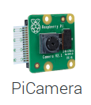

1. Installation¶
Pour accéder au logiciel,
- Installer Python 3. Si votre système Raspberry Pi est à jour, vous pouvez ignorer cette section.
- Télécharger le projet disponible ici
- Déplacer le fichier PiCamera [Desktop Entry] sur le bureau. Il devrait avoir l’icône du module PiCamera V2
- Ouvrir le fichier PiCamera
1.1. Installation de Python 3¶
Le plus important est de s’assurer que votre système contient les packages de la picamera. Pour ce faire, entrez la commande suivante dans l’invite de commande de votre Raspberry Pi:
..code-block:: console
$ sudo apt-get update $ sudo apt-get install python3-picamera
Si vous éprouvez des difficultés pour mettre à jour votre Raspberry Pi, consultez cette page bien détaillée de la documentation du package Picamera.
1.2. Télécharger le projet¶
Vous pouvez importer le projet en entrant la commande suivante:
..code-block:: console
$ sudo apt-get install git $ git clone https://github.com/jtpaquet/PiCamera-GUI
Sinon, vous pouvez télécharger le projet en tant que fichier compressé .zip et le déplacé dans le répertoire voulu.
1.3. Ouvrir l’application¶
Déplacer le fichier ayant cette icône sur le bureau.
En ouvrant ce fichier, l’interface graphique devrait s’ouvrir et vous devriez pouvoir l’utiliser. Assurez vous que la PiCamera soit bien branchée. Si l’erreur persiste, essayez de redémarrer le Rapsberry Pi.
Sinon, vous pouvez ouvrir l’invite de commande dans le répertoire dans lequel se trouve les fichier et entrer la ligne de commande:
$ python3 main.py